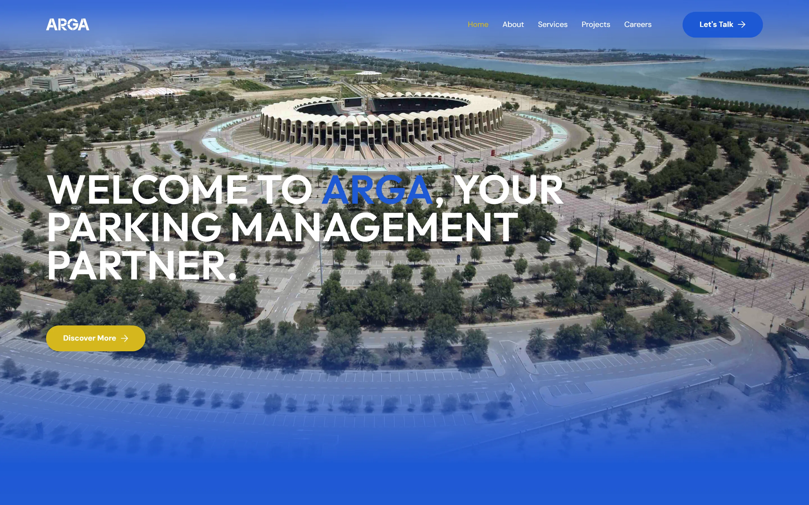
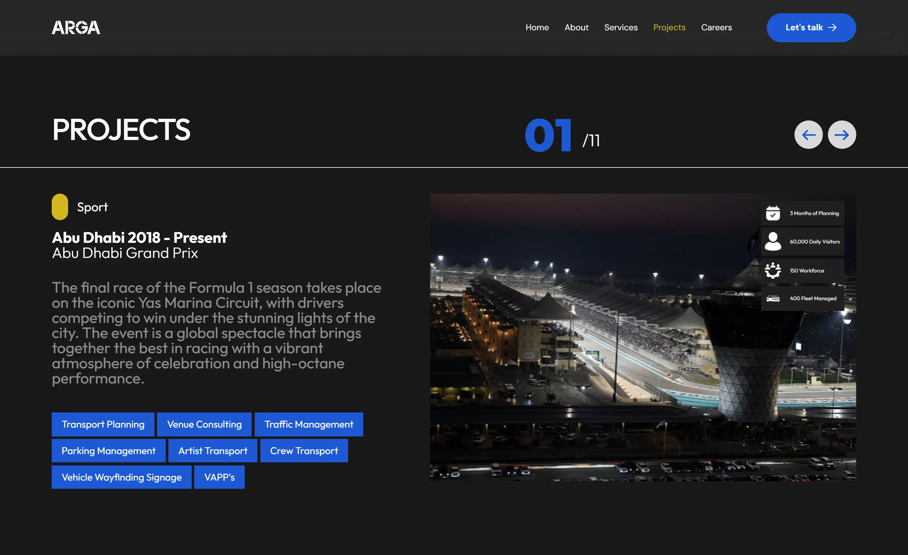
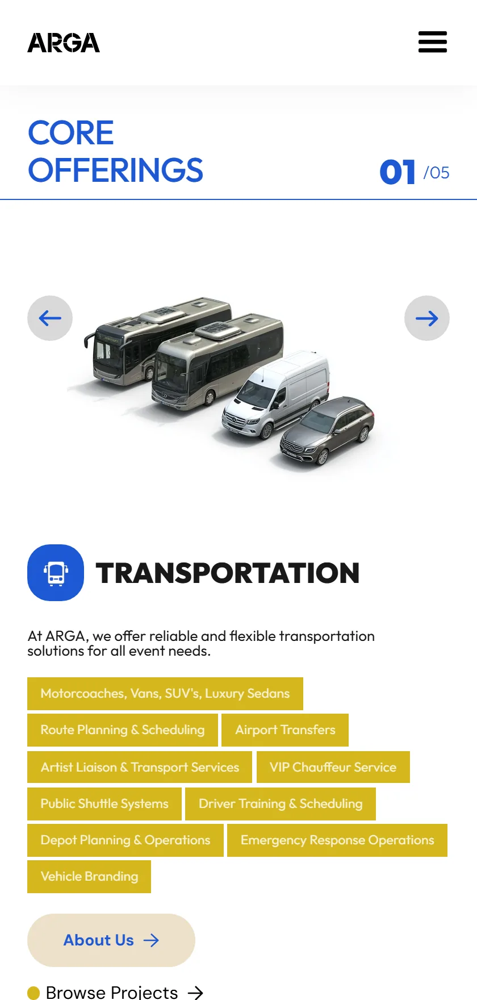

Featured Project · 015
Coffee Merchant the science, made navigable.
2025
·
AI Content
·
Social Media
View Case Study
A website for the operator that moves the Gulf's biggest events. Transport, traffic, parking and mobility technology across Abu Dhabi, Riyadh, Jeddah, AlUla and Washington D.C. Architecture, design system and build by ILLUSORR.

ARGA is a transport partner, a traffic partner, a parking partner and a technology partner, depending on who is asking. The website had to answer all four without splitting the company into four brands.
The credibility was already there and largely undocumented: Abu Dhabi Grand Prix since 2018, Soundstorm, the Papal Visit, the FIFA Club World Cup, the UAE Tour. What existed lived in tender decks, not on a page anyone could read.
So the site is built around the operational record. Every flagship project carries the same four measures, planning time, people, fleet and crowd, because those are the numbers an event owner uses to decide whether ARGA can hold their venue on the day.
A deliberately shallow map: five sections, one enquiry route, and a projects index that carries the weight instead of a services page full of adjectives.
One signal colour for every action and marker, everything else reserved for the imagery: crowds, fleets, night circuits, empty stadiums at dawn.
One CMS template, one comparable row per project. This is the site's real content model, and it is why the projects index reads as evidence rather than a gallery.
| Project | Years | Planning | Crowd | Workforce | Fleet |
|---|---|---|---|---|---|
| Abu Dhabi Grand Prix | 2018 – present | 3 months | 60,000 daily | 150 | 400 |
| Soundstorm Music Festival | 2019 – present | 3 months | 400,000 total | 1,500 | 100 |
| AlUla Moments | 2022 – present | Year-long | 600,000 | 150 | 20 |
| Red Sea International Film Festival | 2024 – present | 3 months | 40,000 total | 100 | 500 |
| Diriyah Season | 2019 – present | 6-month activation | — | 180 | 80 |
| Al Hosn & Maritime Festivals | 2016 – present | 2 months | — | 60 | 20 |
| FIFA Club World Cup, Abu Dhabi | 2018 & 2019 | 6 months | 30,000 capacity | 180 | 160 |
| AFC Asian Cup, Abu Dhabi | 2019 | 6 months | 30,000 capacity | 390 | 120 |
| Special Olympics, Abu Dhabi | 2019 | — | — | 240 | 90 |
| Pope Francis Visit to Abu Dhabi | 2019 | — | 180,000 in a day | 600 | 2,400 buses |
| UAE Tour | 2016 – 2019 | — | — | 500 | 13,000 equipment |
Both frames are the live site, at the widths they were designed for. New projects are added by ARGA's own team, one CMS record at a time. Click into a frame to use it.


Three passes, and the content model was agreed before any page was designed.
Ten years of operations lived in tender documents. We pulled every flagship project into one sheet and settled on four measures every project could report.
A single CMS record: dates, narrative, gallery, four stats. Add a project and the index, the filters and the home carousel all update without a designer.
The home hero rotates through transport, traffic, parking and technology, so each audience sees itself named in the first screen rather than buried in services.